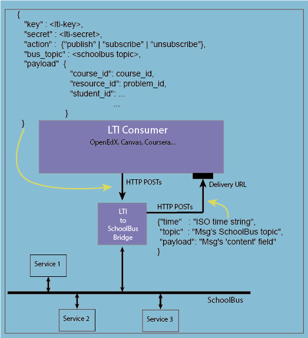

Welcome to the
LTI-to-SchoolBus Bridge
Note: use of this service is via POST to
HTTPS://<server>:<port>/schoolbus
LTI-to-SchoolBus bridges are servers that connect Learning Technology
Interchange (LTI) consumers with a SchoolBus (see figure).

Each bridge listens on a dedicated port. LTI consumers may execute
any of three actions by POSTing an HTTP request to the bridge. Options
are
- Publish to a SchoolBus topic
- Subscribe to a SchoolBus topic
- Unsubscribe from a SchoolBus topic
The figure shows examples of a request as it should appear in the POST
body. If LTI consumers subscribe to a topic, they need to provide a
URL to which the bridge will POST messages coming from the bus.
The figure shows an example of what to expect from such a message
delivery in the POST body.